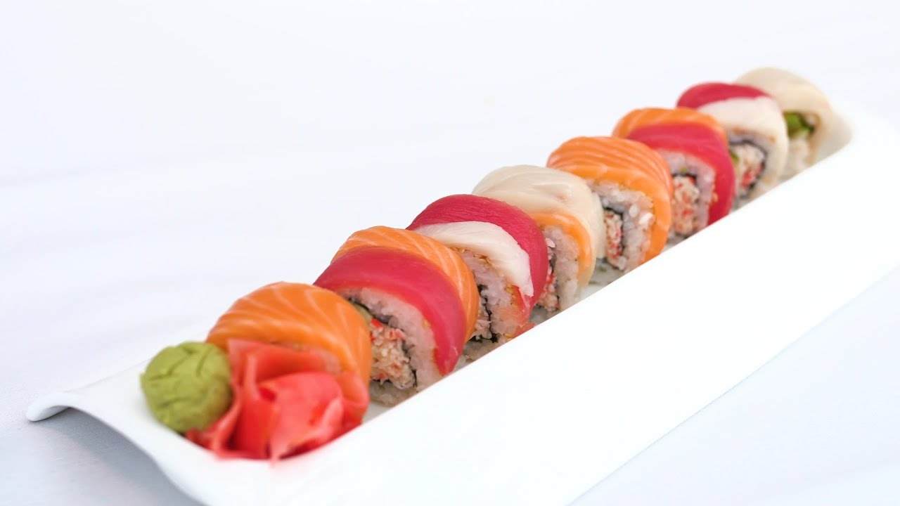

The Rainbow Roll!

How to make it!
This sushi roll encompasses some the most beloved fish types in one roll! It can use whatever,
your favorite fish is, but typically it's wrapped with rice,Nori,Salmon, Yellowtail and Tuna, with crabstick and avocado inside.
Ingredients
- Rice
- Rice Wine Vinegar
- Avocado
- Crabstick
- Nori
- Sushi Grade Salmon, Tuna, and Yellowtail or whatever you prefer!
Steps
- Make sticky rice by adding 1:1 rice vinegar to fresh white rice and mix, ny hand
- Prepare chosen fish, avocado, and crabstick.
- Place ingredients on sushi roll matt and roll together.
- Unroll matt, and cut sushi into even bite sized pieces.
Return to Main Page